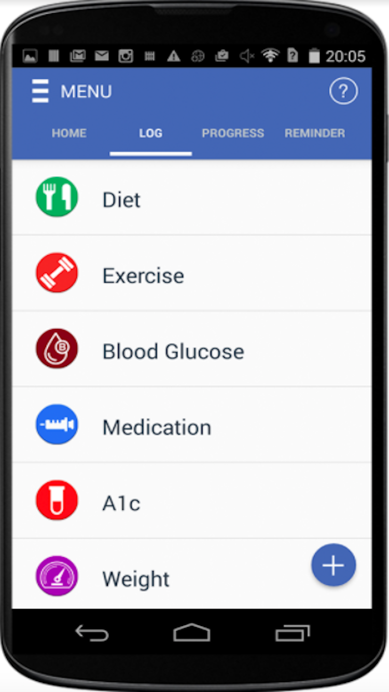

Quelques conseils sur l'utilisation des quatre principales fonctionnalités de GlucoGuide:
-
MAISON
Des conseils personnalisés sur la santé quotidienne, des conseils personnalisés et votre évaluation hebdomadaire avec points gagnés.
-
BÛCHE
Ici, vous êtes en mesure de consigner des données individuelles pour votre alimentation, exercice, glycémie, médicaments, A1c, poids, etc Voici quelques conseils spécifiques:

-
Régime
Choisissez soit le repas précédemment enregistré, soit cliquez sur "Ajouter nouveau". La caméra s'ouvre et vous pouvez prendre une photo de tout le repas pour utiliser notre Reconnaissance avancée des aliments. Vous pouvez également rechercher des aliments par mots-clés ou numériser un élément à l'aide du lecteur de codes-barres.
-
Exercise
Enregistrement automatique des exercices avec le podomètre intégré avec des objectifs quotidiens et hebdomadaires de comptage de pas! Vous n'avez pas besoin de dépenser de l'argent pour acheter FitBit! Vous pouvez également enregistrer l'exercice manuellement (comme la natation).
-
Poids
Si vous prévoyez de perdre du poids, définissez votre objectif de perte de poids dans le menu, les objectifs. Ensuite, vos calories quotidiennes etc seront modifiés en conséquence. Dans LOG, cliquez sur «Poids» pour entrer votre poids hebdomadaire ou mensuel pour voir comment vous atteindre votre objectif!
-
-
LE PROGRÈS
Affichez plusieurs graphiques clés sur vos progrès. Vous pouvez achevée Sécurisé dans votre journal de bord en ligne sécurisé en utilisant n'importe quel navigateur https://glucoguide.com et cliquez sur Connexion utilisateur. Vous pouvez également consulter et imprimer ces tableaux pour vos cliniciens avant vos visites cliniques.
-
RAPPELS
Si vous prenez des médicaments et vérifiez la glycémie régulièrement, nous vous recommandons vivement de configurer des rappels quotidiens! Choisissez l'un des 4 types à ajouter et définissez l'heure. Quand il est temps pour le rappel, une notification va s'éteindre sur votre téléphone. Ensuite, il suffit de cliquer sur "Take & Log" pour enregistrer les données (comme prendre les mêmes médicaments).